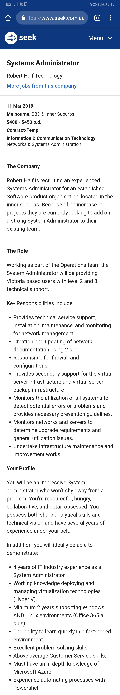

Hello! My name is Rahal and Welcome to my page!
index.html
Introduction:
My name is Rahal Abeyrathna and I am 18, turning 19 this May.
My student code is s3781696 and email is s3781696@student.rmit.edu.au
My nationality is Sri Lankan however I was born in Australia on May 10th 2000 and I am actually really bad
at speaking Sinhalese.
Prior to RMIT, I went to Glen Waverley Secondary College and studied Futher Maths, English Language, Psychology,
Software Development and Media.
I also did a traineeship for a company called Lightmare Studios which counted as my 6th subject while also getting paid!
As for my interesting fact, I recently got a pet bird, her name is Luma (no, not Luna) and she is a Green Cheek Conure. She is such a sweetheart but also
the biggest brat as she constantly needs your attention.
Truth be told, I'm actually not sure of her gender (I was told she is a girl by the breeder) but there is no way to be sure without doing a DNA test and the results take about 2 weeks to come in.
//Insert image of Luma here//
Interest in IT
What is your interest in IT? When did your interest in IT start? Was there a particular event or person that sparked your interest? Outline your IT experience (if any).
My Dad was a technician in the past and because of this, I would always be interested in watching him help fix computers and messing with the insides of PC's which looked like rocket science to 6 year old me.
I also got access to lots of different types of technology like game consoles and computers because of my Dad and since then, I've always been really interested in technology and how it works.
I decided to take Software Development as one of my VCE subjects which helped build my passion for IT and afterwards I decided that IT was something that I wanted to persue as a career.
Why did you choose to come to RMIT?
I chose to come to RMIT as I learnt that RMIT has a really good reputation on the technical side of education and I also heard that RMIT was a lot more hands-on and practical compared to other
uni's such as Monash.
What do you expect to learn during your studies?
I hope to learn the necessary skills I will need to persue a job in the IT field, specifically for networking and Sysadmin duties. This includes basic networking knowledge such as protocols and the hardware
associated. I also want to learn basic programming and database management as it may be crucial to finding a job in the Sysadmin field. I would also hope to learn more about Linux and Command-Line interfaces
as Linux is a really interesting operating system which may also be very important for potential job opportunities.
Ideal Job
This is a job advertisement that I found on Seek.com
https://www.seek.com.au/job/38545564?type=standard&searchrequesttoken=e57def46-7446-4cd8-801d-f7e2dd7a108d
